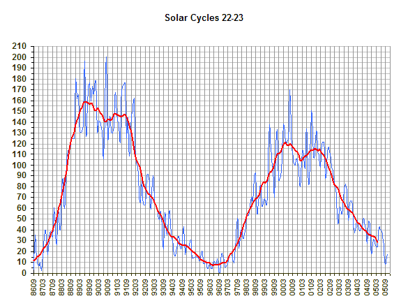

2005年 01.Jan-31.Dec
| Back Issues | Back Issues | Back Issues | Back Issues |
|---|---|---|---|
| Dec.01-31.2005 | Nov.01-30.2005 | Oct.01-31.2005 | Sep.01-30.2005 |
| Aug.01-31.2005 | Jul.01-31.2005 | Jun.01-30.2005 | May.01-31.2005 |
| Apr.01-30.2005 | Mar.01-31.2005 | Feb.01-28.2005 | Jan.01-31.2005 |


[Back Issues Jan-Dec.2005]
TIME:UTC(JST-09:00)
Report from JA1RJU (PM95sq)
31.Dec.2005(15:00c)
*VK-TV 04:40- 46.172/240 --
30.Dec.2005(15:00c)
*BY-TV 03:30- 49.750 --
*ZL-TV 04:40- 45.24/25/26--
*VK-TV 04:40- 46.172/240 --
29.Dec.2005(15:00c)
*BY-TV 03:00- 49.750 -- strong!
*ZL-TV 04:10- 45.24/25/26--
*VK-TV 07:30- 46.172/240 -- weak
28.Dec.2005(15:00c)
*VK-TV 05:30- 46.172 --
Report from JA1RJU (QM06cb/PM95sq)
27.Dec.2005(15:00c)
ZL3NW *03:43 50.*** JT65A EME Report=-19dB(RE66-QM06)
Report from JA1RJU (PM95sq/QM06cb)
26.Dec.2005(15:00c)
*ZL-TV 03:55- 45.240/250 -- weak
*VK-TV 03:55- 46.172/240 --
25.Dec.2005(15:00b)
*VK-TV 04:40- 46.240 --
24.Dec.2005(15:00b)
23.Dec.2005(15:00b)
*VK-TV 03:40- 46.172 --
22.Dec.2005(15:00b)
21.Dec.2005(15:00c)
*ZL-TV 06:30- 45.24/25/26--
*VK-TV 06:30- 46.172/240 --
Report from JA1RJU (QM06cb/PM95sq)
20.Dec.2005(15:00b)
19.Dec.2005(21:00c)
*ZL-TV 03:00- 45.24/25/26--
*BY-TV 06:20- 49.750 -- strong!
W5UWB *15:29- 50.*** JT65A EME(EL17-PM94)
G4PCI *20:39 50.*** JT65A EME Report=-28dB(IO91-QM06)
18.Dec.2005(15:00c)
*VK-TV 03:00- 46.172 --
G4PCI *10:14 50.*** JT65A EME Report=-24dB(IO91-QM06)
17.Dec.2005(15:00b)
Report from JA1RJU (PM95sq/QM06cb)
16.Dec.2005(18:00d)
*BY-TV 03:00- 49.750 -- strong!
F5GTR *17:24- 50.*** JT65A EME(IN96-PM94)
15.Dec.2005(15:00c)
*BY-TV 03:00- 49.750 -- strong!
14.Dec.2005(15:00b)
13.Dec.2005(15:00c)
*ZL-TV 07:30- 45.250 --
*VK-TV 07:30- 46.172 -- weak
12.Dec.2005(15:00c)
*ZL-TV 01:50- 45.24/25/26--
*VK-TV 01:50- 46.172/240 --
*VK-TV 06:30- 46.172 --
SP6GWB *14:04- 50.*** JT65A EME(JO80-PM94)
11.Dec.2005(15:00c)
SM7BAE *13:04- 50.*** JT65A EME(JO65-PM94)
G4PCI *14:21- 50.*** JT65A EME(IO91-PM94)1X6el!
10.Dec.2005(15:00b)
*VK-TV 07:00- 46.240 --
09.Dec.2005(15:00c)
*ZL-TV 01:50- 45.24/25/26-- weak
*VK-TV 01:50- 46.240 --
*BY-TV 02:20- 49.750 -- strong!
*VK-TV 02:50- 46.172 --
G4IGO *14:01- 50.*** JT65A EME(IO80-PM94)1X5el!!
08.Dec.2005(15:00b)
*BY-TV 04:00- 49.750 --
07.Dec.2005(15:00b)
06.Dec.2005(15:00b)
05.Dec.2005(15:00c)
*ZL-TV 04:20- 45.240 --
*VK-TV 04:20- 46.240 --
04.Dec.2005(15:00c)
*ZL-TV 04:00- 45.250/260 --
*VK-TV 04:25- 46.172 --
VK5UBC 05:41 50.130 SSB weak
03.Dec.2005(15:00c)
*VK-TV 03:40- 46.172 -- weak
*9M-TV 04:00- 48.260 ---
*BY-TV 04:00- 49.750 --
02.Dec.2005(15:00d)
*ZL-TV 02:25- 45.250/260 --
*VK-TV 02:25- 46.172/240 --
VK3DUT 04:25 50.110 SSB
VK4WS 04:25 50.110 CW
VK4ZQ 04:25 50.120 SSB
VK4RGG/B 04:25- 50.058- CW Beacon
VK4WTN 04:30 50.125 SSB
VK4WS 04:36 50.110/125 SSB
VK4ZQ 04:39 50.125/110 SSB
VK3DUT 04:42 50.110 SSB
01.Dec.2005(15:00c)
*ZL-TV 03:10- 45.250 --
*VK-TV 03:10- 46.172/240 --
VK3XQ 03:19 50.110/130 CW/SSB
VK3AMK 03:29 50.140 SSB
VK3DUT 03:30 50.110 SSB
VK3VG 03:30 50.110/120 SSB strong!
VK3AMK 03:35 50.125 CW
VK3VG 03:43 50.110 SSB
30.Nov.2005(15:00c)
*ZL-TV 02:00- 45.24/25/26--
*VK-TV 03:00- 46.172/240 --
29.Nov.2005(15:00b)
*VK-TV 03:00- 46.172 -- weak
28.Nov.2005(15:00c)
*ZL-TV 04:30- 45.24/25/26--
*VK-TV 04:30- 46.172/240 --
*VK-TV 06:20- 46.172 --
27.Nov.2005(15:00b)
26.Nov.2005(15:00c)
*ZL-TV 04:30- 45.250 --
*VK-TV 04:30- 46.172/240 --
25.Nov.2005(15:00c)
*BY-TV 01:50- 49.750
24.Nov.2005(15:00b)
23.Nov.2005(15:00c)
*VK-TV 04:20- 46.240 -- weak
*BY-TV 05:30- 49.750 --
22.Nov.2005(15:00b)
21.Nov.2005(15:00b)
*VK-TV 05:05- 46.172 -- weak
20.Nov.2005(15:00c)
*VK-TV 05:40- 46.172/240 --
19.Nov.2005(15:00c)
*VK-TV 03:30- 46.172/240 --
18.Nov.2005(15:00c)
*VK-TV 03:10- 46.172/240 --
17.Nov.2005(15:00c)
*VK-TV 01:50- 46.172/240 --
16.Nov.2005(15:00b)
15.Nov.2005(15:00b)
14.Nov.2005(15:00c)
*ZL-TV 01:40- 45.250 --
13.Nov.2005(15:00b)
12.Nov.2005(15:00c)
Report from JA1RJU (QM06cb/PM95sq)
11.Nov.2005(10:00b)
Report from JA1RJU (QM06cb)
10.Nov.2005(15:00c)
*BY-TV 01:00- 49.750 --
*ZL-TV 03:30- 45.24/25/26--
*VK-TV 04:00- 46.172/240 --
*9M-TV 08:00- 48.240/260 --
09.Nov.2005(15:00e)
*ZL-TV 03:50- 45.250 --
*VK-TV 03:50- 46.172/240 --
FK8SIX/B 04:25- 50.080 CW Beacon weak
FK8SIX/B 05:20- 50.080 CW Beacon again strong!
VK4RGG/B 05:23- 50.080 CW Beacon
VK4BLK 05:34 50.110 SSB
FK1TK 05:36 50.110 SSB QSO with JA5
VK4CV 05:40 50.110 SSB
VK4BLK 05:48 50.120 SSB/CW
VK4RGG/B 06:30- 50.080 CW Beacon still good!
IK2GSO 13:20- 50.*** JT65A EME(JN45-QM06)-25dB
08.Nov.2005(15:00c)
*VK-TV 03:50- 46.172/240 --
FK8SIX/B 04:20- 50.080 CW Beacon strong!
FK8SIX/B 06:10- 50.080 CW Beacon
Report from JA1RJU (PM95sq/QM06cb)
07.Nov.2005(15:00c)
*BY-TV 03:00- 49.750 --
06.Nov.2005(15:00c)
05.Nov.2005(15:00e)
*ZL-TV 03:00- 45.24/25/26--
*VK-TV 03:00- 46.172 --
V73SIX/B 03:10- 50.014 CW Beacon
FK8SIX 03:20- 50.080 CW Beacon strong!
VK4RGG 03:30- 50.058 CW Beacon
VK4WS 03:31 50.110/120 CW/SSB
FK8SIX 04:10- 50.080 CW Beacon strong!
VK4WS 04:10 50.110 SSB still good!
DU1EV/B 06:50- 50.008 CW Beacon
04.Nov.2005(15:00c)
*ZL-TV 03:00- 45.240 -- weak
*VK-TV 03:00- 46.172 --
*BY-TV 11:00- 49.750 --
03.Nov.2005(15:00c)
*VK-TV 03:50- 46.172 --
*9M-TV 05:00- 48.240 -- strong!
02.Nov.2005(15:00c)
*VK-TV 02:30- 46.172 --
*BY-TV 04:00- 49.750 --
01.Nov.2005(15:00b)
31.Oct.2005(15:00b)
*BY-TV 03:00- 49.750 --
30.Oct.2005(15:00b)
*VK-TV 03:20- 46.172 --
29.Oct.2005(15:00b)
*BY-TV 08:00- 49.750 --
28.Oct.2005(15:00b)
*VK-TV 06:40- 46.172 -- weak
27.Oct.2005(15:00c)
*ZL-TV 03:00- 45.24/25/26--
*VK-TV 03:50- 46.172/240 --
26.Oct.2005(15:00c)
*VK-TV 04:50- 46.172 -- weak
*BY-TV 08:00- 49.750 --
25.Oct.2005(15:00d)
*VK-TV 03:20- 46.172/240 --
*ZL-TV 03:40- 45.250 --
VK4RGG 04:10- 50.058 CW Beacon
*9M-TV 05:10- 48.240/260 --
*BY-TV 05:10- 49.750 --
DU1EV/B 05:10- 50.008 CW Beacon strong!
24.Oct.2005(15:00c)
*VK-TV 03:10- 46.172 --
*9M-TV 07:00- 48.240 --
*BY-TV 07:00- 49.750 --
23.Oct.2005(15:00c)
*VK-TV 02:00- 46.172 --
VK8RAS 06:30- 50.047 CW Beacon
K1SG *13:51- 50.*** JT65A EME(FN43-PM94)
22.Oct.2005(15:00d)
*9M-TV 02:00- 48.240 --
*VK-TV 03:30- 46.172/240 --
VK3EK 04:39 50.110/140 SSB
VK4WS 04:40 50.110 CW
VK4BLK 04:41 50.130 SSB
VK3DUT 05:00 50.110/130 SSB
21.Oct.2005(15:00c)
*VK-TV 03:10- 46.172 --
K1SIX *15:00- 50.*** JT65A EME(FN42-PM84)
20.Oct.2005(15:00c)
*VK-TV 03:30- 46.172 --
19.Oct.2005(15:00c)
*VK-TV 03:30- 46.172 --
*9M-TV 04:30- 48.240 --
DU1EV/B 04:30- 50.008 CW Beacon
18.Oct.2005(15:00c)
*BY-TV 01:00- 49.750 --
*VK-TV 04:00- 46.172 --
17.Oct.2005(15:00d)
*ZL-TV 03:00- 45.24/25/26-- strong!
*VK-TV 03:00- 46.172/240 --
FK8SIX/B 03:15- 50.080 CW Beacon strong!
VK4AFL 03:56 50.110/170 SSB
VK4RGG 04:00- 50.058 CW Beacon
VK4NW 04:13 50.110 SSB
VK4JOO 04:15 50.110/120 SSB
VK4RTL 04:20- 50.087.5 CW Beacon
VK8RAS 04:20- 50.047 CW Beacon
VK4WS 04:30 50.110/140 SSB
16.Oct.2005(15:00b)
Report from JA1RJU (QM06cb/PM95sq)
15.Oct.2005(15:00c)
*BY-TV 02:00- 49.750 --
Report from JA1RJU (QM06cb)
14.Oct.2005(18:00d)
*BY-TV 01:00- 49.750 --
*VK-TV 03:30- 46.172 --
*VK-TV 04:00- 46.240 --
G8PL 17:30- 50.*** JT65A EME(JO01-QM06)-26dB
Report from JA1RJU (PM95sq/QM06cb)
13.Oct.2005(15:00b)
*VK-TV 05:00- 46.240 --
Report from JA1RJU (PM95sq)
12.Oct.2005(15:00c)
*BY-TV 05:00- 49.750 --
*9M-TV 05:00- 48.240 --
11.Oct.2005(15:00c)
*VK-TV 02:50- 46.172 --
*9M-TV 05:30- 48.240 --
10.Oct.2005(15:00c)
*VK-TV 04:00- 46.172 -- strong!
*VK-TV 04:20- 46.240 --
*ZL-TV 04:20- 45.24/25/26--
Report from JA1RJU (QM06cb)
09.Oct.2005(15:00b)
◎第26回全市全郡Contest(～21:00JST)
08.Oct.2005(15:00b)
◎第26回全市全郡Contest(21:00JST～)
Report from JA1RJU (PM95sq/QM06cb)
07.Oct.2005(15:00b)
Report from JA1RJU (PM95sq)
06.Oct.2005(15:00b)
05.Oct.2005(15:00c)
04.Oct.2005(15:00c)
*BY-TV 06:00- 49.750 --
*9M-TV 06:00- 48.240 --
03.Oct.2005(15:00c)
*BY-TV 06:00- 49.750 --
*9M-TV 06:00- 48.240/260 --
02.Oct.2005(15:00c)
*BY-TV 05:00- 49.750 --
*9M-TV 08:30- 48.240/260 --
01.Oct.2005(15:00b)
30.Sep.2005(15:00b)
29.Sep.2005(15:00b)
28.Sep.2005(15:00c)
*9M-TV 07:00- 48.240/260 --
XV3AA 07:20 50.130 SSB
27.Sep.2005(15:00c)
*BY-TV 06:30- 49.750 --
26.Sep.2005(15:00d)
*VK-TV 03:30- 46.172/240 --
V73SIX/B 04:30- 50.014 CW Beacon
KG6DX 05:12 50.106 CW
DU1EV/B 06:50- 50.008 CW Beacon strong!
XV3AA 08:20 50.130 SSB
25.Sep.2005(15:00b)
Report from JA1RJU (QM06cb/PM95sq)
24.Sep.2005(15:00c)
*BY-TV 08:00- 49.750 --
V73SIX/B 08:15- 50.014 CW Beacon good sig in to PM95!
V73SIX/B 08:50- 50.014 CW Beacon
Report from JA1RJU (QM06cb)
23.Sep.2005(21:00d)
*BY-TV 01:30- 49.750 --
LA8AV 19:46- 50.*** JT65A EME(JO49-QM06) -26dB peak!
22.Sep.2005(21:00d)
K7AD 14:52- 50.*** JT65A EME(DN06-PM94) -19dB peak!
G8PL 19:50- 50.*** JT65A EME(JO01-QM06) -27dB 1x6el!
SM7BAE 20:42- 50.*** JT65A EME(JO65-QM06) -24dB peak!
Report from JA1RJU (PM95sq/QM06cb)
21.Sep.2005(21:00d)
*VK-TV 02:30- 46.172/240 --
SM7BAE 19:00- 50.*** JT65A EME(JO65-QM06) -17dB peak!
G8PL 19:10- 50.*** JT65A EME(JO01-QM06)
Report from JA1RJU (PM95sq)
20.Sep.2005(15:00b)
19.Sep.2005(15:00b)
18.Sep.2005(15:00c)
17.Sep.2005(15:00c)
16.Sep.2005(15:00c)
15.Sep.2005(15:00b)
14.Sep.2005(15:00b)
13.Sep.2005(15:00b)
*BY-TV 04:30- 49.750 --
12.Sep.2005(15:00c)
*BY-TV 00:00- 49.750 --
11.Sep.2005(15:00c)
*BY-TV 00:00- 49.750 --
*9M-TV 02:25- 48.240/260 --
VR2SIX/B 02:25- 50.075 CW Beacon
10.Sep.2005(15:00c)
*BY-TV 01:00- 49.750 --
09.Sep.2005(15:00c)
*BY-TV 02:00- 49.750 --
*BY-TV 12:00- 49.750 --
08.Sep.2005(15:00d)
*BY-TV 01:00- 49.750 --
*9M-TV 05:00- 48.240/260 --
*VK-TV 06:50- 46.172 --
VK4RTL 07:00- 50.087 CW Beacon
VR2SIX/B 07:00- 50.075 CW Beacon
DU1EV/B 08:00- 50.008 CW Beacon strong!
DU1EV/B 08:30- 50.008 CW Beacon
07.Sep.2005(15:00c)
*BY-TV 01:00- 49.750 --
06.Sep.2005(15:00c)
*BY-TV 02:00- 49.750 --
05.Sep.2005(15:00c)
*BY-TV 13:00- 49.750 --
04.Sep.2005(15:00b)
*BY-TV 03:00- 49.750 --
03.Sep.2005(15:00b)
02.Sep.2005(15:00b)
*BY-TV 01:30- 49.750 --
01.Sep.2005(15:00b)
*BY-TV 06:00- 49.750 --
31.Aug.2005(15:00c)
*BY-TV 05:00- 49.750 --
30.Aug.2005(15:00c)
*BY-TV 01:00- 49.750 --
29.Aug.2005(17:00d)
*BY-TV 01:00- 49.750 --
K1SG 16:16 50.*** JT65A EME(FN42-PM95so)
28.Aug.2005(15:00b)
Report from JA1RJU (QM06cb/PM95sq)
27.Aug.2005(15:00c)
*BY-TV 01:00- 49.750 --
W1JJ 14:22 50.*** JT65A EME(FN41-PM95so)
Report from JA1RJU (QM06cb)
26.Aug.2005(15:00c)
*BY-TV 00:00- 49.750 --
*P5-AM 09:30- 48.250 AM Radio
G8PL 21:30- 50.*** JT65A EME(JO01-QM06)
25.Aug.2005(15:00c)
*BY-TV 00:00- 49.750 --
Report from JA1RJU (PM95sq/QM06cb)
24.Aug.2005(21:00c)
*BY-TV 02:00- 49.750 --
G8PL 20:50- 50.*** JT65A EME(JO01-QM06)
Report from JA1RJU (PM95sq)
23.Aug.2005(15:00c)
*BY-TV 06:00- 49.750 --
22.Aug.2005(15:00c)
*BY-TV 00:00- 49.750 --
21.Aug.2005(15:00d)
◎ 8/20-8/21 ハムフェア2005 (東京ビッグサイト)
*BY-TV 00:00- 49.750 --
VR2SIX/B 01:00- 50.075 CW Beacon
VR2SIX/B 09:00- 50.075 CW Beacon
20.Aug.2005(15:00b)
◎ 8/20-8/21 ハムフェア2005 (東京ビッグサイト)
*BY-TV 00:00- 49.750 --
19.Aug.2005(15:00d)
*BY-TV 00:00- 49.750 --
*9M-TV 01:30- 48.240 --
BD4XA 02:04 50.115 SSB
BD4XA 03:30 50.110/115 SSB
DS1PDF 05:40 50.110 SSB
18.Aug.2005(15:00b)
*BY-TV 06:00- 49.750 --
17.Aug.2005(15:00d)
*BY-TV 00:00- 49.750 --
*9M-TV 02:30- 48.240 --
KG6DX 07:19 50.110 CW/SSB
KG6DX 08:21 50.110 CW strong!
KG6DX 09:01 50.110 CW CQ
KG6DX 09:54 50.110 CW CQ
16.Aug.2005(15:00c)
*BY-TV 00:00- 49.750 --
15.Aug.2005(15:00c)
*BY-TV 00:00- 49.750 --
14.Aug.2005(15:00c)
*BY-TV 00:00- 49.750 --
IW5DHN 14:47 50.*** JT65A EME(JN53-PM53)
13.Aug.2005(15:00c)
*BY-TV 00:00- 49.750 --
HL5BMX 01:30 50.135 SSB
HL2ST 01:35 50.146 CW
HL2SU 02:15 50.116 CW
12.Aug.2005(15:00d)
*BY-TV 00:00- 49.750 --
*9M-TV 01:30- 48.240/260 --
VR2SIX/B 03:00- 50.075 CW Beacon
DS1PDF 03:49 50.110 SSB
DS1PDF 04:06 50.110 SSB
11.Aug.2005(15:00d)
*BY-TV 00:00- 49.750 --
DS1LBT 04:51 50.110 CW
*P5-Audio 07:30- 48.250 AM HF-Radio sprias
DS1PDF 09:24 50.110/120 SSB
10.Aug.2005(15:00c)
*BY-TV 00:00- 49.750 --
09.Aug.2005(15:00c)
*BY-TV 00:00- 49.750 --
DS1PDF 01:13 50.110 SSB
DS1PDF 08:11 50.110 SSB
08.Aug.2005(15:00c)
*BY-TV 00:00- 49.750 --
*9M-TV 01:30- 48.240/260 --
VR2SIX/B 02:07- 50.075 CW Beacon
GD0TEP 09:35 50.*** JT65A EME(IO74-PM94)
07.Aug.2005(15:00c)
*BY-TV 00:00- 49.750 --
KG6DX 04:57 50.110 CW CQ
BU2/JJ1TBB 07:45 50.110/115 CW
06.Aug.2005(15:00c)
*BY-TV 00:00- 49.750 --
05.Aug.2005(15:00c)
*BY-TV 00:00- 49.750 --
Report from JA1RJU (QM06cb/PM95sq)
04.Aug.2005(15:00c)
*BY-TV 00:00- 49.750 --
*9M-TV 01:00- 48.240/260 --
Report from JA1RJU (QM06cb)
03.Aug.2005(15:00d)
*BY-TV 00:00- 49.750 --
*9M-TV 01:00- 48.240/260 --
DS1PDF 01:34 50.110 SSB
*BY-TV 07:00- 49.750 --
*9M-TV 07:00- 48.240/260 --
VR2SIX/B 07:30- 50.075 CW Beacon (Es JA6)
HL1JV 08:06 50.110/150 SSB
DS1MFC 10:45 50.110 SSB
02.Aug.2005(15:00c)
*BY-TV 00:00- 49.750 --
NL7Z 06:46 50.110 CW QSO with JA7
*ZL-TV 08:00- 45.240 --
*VK-TV 08:00- 46.172 --
BD9BA 08:13 50.110 SSB/CW
Report from JA1RJU (PM95sq/QM06cb)
01.Aug.2005(15:00c)
*BY-TV 00:00- 49.750 --
DS1PDF 11:35 50.110 SSB
31.Jul.2005(15:00c)
*BY-TV 00:00- 49.750 --
30.Jul.2005(15:00b)
*BY-TV 00:00- 49.750 --
Report from JA1RJU (QM06cb/PM95sq)
29.Jul.2005(15:00c)
*BY-TV 00:00- 49.750 --
Report from JA1RJU (QM06cb)
28.Jul.2005(15:00c)
*BY-TV 00:00- 49.750 --
27.Jul.2005(15:00d)
*BY-TV 00:00- 49.750 --
VR2SIX/B 04:30- 50.075 CW Beacon (Es JA4-6)
*9M-TV 06:30- 48.240/260 --
W1JJ 13:46 50.*** JT65A EME(FN41-QM06cb)
26.Jul.2005(15:00d)
*BY-TV 00:00- 49.750 --
*9M-TV 02:30- 48.240 --
DS1PDF 06:27 50.150 SSB
HL1JV 06:55 50.110 CW/SSB
W1JJ 14:05 50.*** JT65A EME(FN41-PM94)
Report from JA1RJU (PM95sq/QM06cb)
25.Jul.2005(22:00d)
*BY-TV 00:00- 49.750 --
K1SG 14:02 50.*** JT65A EME(FN42-QM06cb)
PF7M 21:40 50.*** JT65A EME(JO22-QM06cb)
24.Jul.2005(15:00c)
*BY-TV 00:00- 49.750 --
23.Jul.2005(23:00d)
*BY-TV 00:00- 49.750 --
*9M-TV 01:30- 48.240 --
HL2IPL 12:28 50.110 SSB
GD0TEP 22:18 50.*** JT65A EME(IO74-QM06ad)
22.Jul.2005(15:00c)
*BY-TV 08:00- 49.750 --
21.Jul.2005(15:00c)
*BY-TV 00:00- 49.750 --
HL50HYF 02:37 50.110 SSB
DS1MFC 03:41 50.110 SSB
20.Jul.2005(15:00c)
*BY-TV 00:00- 49.750 --
19.Jul.2005(15:00c)
*BY-TV 00:00- 49.750 --
*P5-AM 08:30- 48.250 AM audio
18.Jul.2005(15:00c)
*BY-TV 00:00- 49.750 --
HL1JV 05:49 50.105 CW
*P5-AM 08:00- 48.250 AM audio
17.Jul.2005(15:00c)
*BY-TV 00:00- 49.750 --
BD4XA 06:11 50.115 SSB
16.Jul.2005(15:00c)
*BY-TV 00:00- 49.750 --
(UN8GC 06:13 50.110 CW JA4)
15.Jul.2005(15:00c)
*9M-TV 00:00- 48.240 --
*BY-TV 00:00- 49.750 --
14.Jul.2005(15:00c)
*??-TV 00:00- 48.250 --
*BY-TV 00:00- 49.750 --
13.Jul.2005(15:00b)
*BY-TV 00:00- 49.750 --
12.Jul.2005(15:00d)
*9M-TV 03:00- 48.24/25/26--
*BY-TV 00:00- 49.750 --
VR2SIX/B 00:30- 50.075 CW Beacon
DU1EV/B 00:30- 50.008 CW Beacon
3W3A/XV3AA 00:50 50.145 SSB
VR2SIX/B 01:30- 50.075 CW Beacon
DU1EV/B 01:50- 50.008 CW Beacon
11.Jul.2005(15:00c)
*BY-TV 00:00- 49.750 --
09-10.Jul.2005(00:00a)
7/09-10日のFlash DX Reportはお休みします。
第22回VSG/第34回6SG Meeting (岩手県新安比温泉)
08.Jul.2005(15:00c)
*BY-TV 00:00- 49.750 --
HL1AEY 08:52 50.110 CW
07.Jul.2005(15:00d)
*BY-TV 00:00- 49.750 --
(IT9RZR 07:07 50.093 CW JA6)
IT9RZR 07:26 50.093 CW
A45XR 09:00 50.105 CW
A45XR 09:30 50.105 CW
06.Jul.2005(15:00d)
*BY-TV 00:00- 49.750 --
HL50HYF 01:40 50.110/120 SSB
*9M-TV 03:00- 48.24/25/26--
(5B4FL 06:24 50.097/110 CW JA5)
(5B4FL 06:59 50.105 CW JA6)
A45XR 12:33 50.105 CW
05.Jul.2005(15:00f)
*BY-TV 00:00- 49.750 --
*9M-TV 02:00- 48.260 --
NL7Z 04:14 50.110 CW
NL7Z 04:25 50.110 CW
KL7NO 05:40 50.105 CW
NL7Z 06:03 50.110 CW
NL7Z 06:20 50.110 CW
(5B4FL 06:26 50.110 CW JA2)
(IT9RZR 06:01 50.101 CW JA3)
--??-- 07:30- 48.250 -- QTF 310deg
(DK2PH 07:40 50.082 CW JA1.2)
IK0FTA 08:28 50.085.7 CW CQ/QRZ
*BY-TV 09:00- 49.750 --
(A45XR 12:10 50.110 CW JA7)
A45XR 13:03 50.110 CW
A61Q 13:03 50.102 CW
A45XR 13:38 50.097 CW
A61Q 13:41 50.102 SSB
A45XR 14:20 50.097 CW
04.Jul.2005(15:00c)
*BY-TV 00:00- 49.750 --
(IW0WTD 06:08 50.110 CW JA2)
(5B4FL 06:30 50.110 CW JA2-)
5B4FL 07:22 50.103 CW
5B8AD 07:33 50.101 CW (Alex:100W with 4el!)
Report from JA1RJU (QM06cb)
03.Jul.2005(15:00d)
*9M-TV 00:00- 48.24/25/26--
*BY-TV 00:00- 49.750 --
BU2AJ 00:30 50.115 SSB
VR2SIX/B 01:00- 50.075 CW Beacon (contest QRM)
BX2AB 01:29 50.110 CW CQ
BD9BA 01:36 50.105 CW CQ
BG7BJR 01:44 50.110/100 SSB
BX2AB 01:46 50.115 CW
UN8GC 03:43 50.110 CW
HL4CAE 05:25 50.100 CW
BD9BA 05:31 50.105 CW
02.Jul.2005(15:00e)
*BY-TV 00:00- 49.750 --
VR2SIX/B 01:30- 50.075 CW Beacon
HL50HYF 04:32 50.110 SSB CQ
DS2NFC 04:53 50.100 CW
NL7Z 05:05 50.105 CW strong! RST599 at peak.
NL7Z 05:46 50.105 CW F.out
NL7Z 06:11 50.105 CW CQ again !
KE7V 06:36 50.091 CW CQ
K6FV/B 06:36 50.069 CW Beacon
KR7O 06:41 50.095 CW
VE7DAY 06:44 50.100 CW
K6KLY 06:48 50.099 CW
VE7XF 06:48 50.092 CW
VE7DAY 06:54 50.095/100 CW
KL7NO 07:05 50.093 CW
NL7Z 07:53 50.105 CW
DS1PCF 09:02 50.105 CW
HL1AEY 09:22 50.110 CW
DS1PCF 09:22 50.110 CW
01.Jul.2005(15:00d)
*9M-TV 00:00- 48.240 --
*BY-TV 00:00- 49.750 --
*9M-TV 01:30- 48.240/260 --
VR2SIX/B 01:30- 50.075 CW Beacon
*BY-TV 03:00- 49.750 --
*9M-TV 03:00- 48.240/260 --
VR2XMT 03:00 50.110 SSB
HL50HYF 03:49 50.110/125 SSB CQ
VR2XMT 03:53 50.110 SSB
HL4GHT 06:49 50.110 SSB CQ
HL4CEL 08:36 50.110 CW CQ
*P5-AM 09:00- 48.250 AM P5(Radio)
30.Jun.2005(17:00d)
*9M-TV 00:00- 48.240 --
*BY-TV 00:00- 49.750 --
BD9BA 04:43 50.110 CW CQ
(UN8GC 05:50 50.110 CW JA2-)
(9H1XT 05:55 50.110 CW JA2-3)
K1SG 16:10 50.*** JT65A EME(FN42-QM06)
29.Jun.2005(15:00c)
*9M-TV 00:00- 48.240 --
*BY-TV 00:00- 49.750 -- Es(JA6-JR6/o)
28.Jun.2005(15:00e)
*9M-TV 00:00- 48.24/25/26-- strong!
*BY-TV 00:00- 49.750 -- Es(JR6/o=JR6YAG)
9M2TO/B 00:30- 50.005 CW Beacon good sig!
VR2SIX/B 00:45- 50.075 CW Beacon
VR2SIX/B 03:50- 50.075 CW Beacon still good!
DS1PCF 04:45 50.100 CW
DS4FKX 05:41 50.107 CW
6K50VM 05:54 50.120 CW
*BY-TV 07:00- 49.750 --
*P5-AM 07:00- 48.250 AM P5(Radio)
27.Jun.2005(15:00d)
*BY-TV 00:00- 49.750 --
KE7V 03:30 50.100 CW
(KE7V/VE7XF/VE7BBG/K7WIA
03:**- 50.100 CW JA2)
VE7AG 03:37 50.097 CW
DS2PDF 03:40 50.097 CW
VE7DUB 03:57 50.100/102 CW
6K2DHP 04:59 50.110 SSB
Report from JA1RJU (PM95sq/QM06cb)
26.Jun.2005(15:00d)
*BY-TV 00:00- 49.750 --
*9M-TV 00:00- 48.24/25/26--
VR2SIX/B 00:00- 50.075 CW Beacon
HL3IB 06:30 50.110 CW Es(JA4-6/8)
HL2JFM 06:55 50.105 CW
DS1PCF 06:56 50.100 CW
KG6DX 07:12 50.110 CW
KG6DX 07:40 50.110 CW calling SV8CS
KG6DX 08:09 50.189 JT65A Mult-Es try with SV8CS -7dB!(not EME)
Report from JA1RJU (PM95sq)
25.Jun.2005(23:00e)
*BY-TV 00:00- 49.750 --
*9M-TV 00:00- 48.24/25/26--
VR2SIX/B 01:30- 50.075 CW Beacon
BW3/JD1BKQ 02:05 50.110 CW CQ
VR2XMT 02:52 50.115 SSB
BW3/JD1BKQ 02:53 50.115 SSB
VR2XMT 04:00 50.115 SSB
KG6DX 07:05 50.110 CW CQ
KG6DX 07:30 50.110 SSB
*BY-TV 09:30- 49.750 --
*9M-TV 09:30- 48.240/260 --
*P5-AM 09:30- 48.250 AM P5(Radio)
VR2SIX/B 09:30- 50.075 CW Beacon
HL1JV 09:57 50.110 SSB
ZL3NW 21:45 50.*** JT65A EME(RE66-PM94)
ZL3NW 22:36 50.*** JT65A EME(RE66-PM84)
24.Jun.2005(15:00d)
*BY-TV 00:00- 49.750 --
*9M-TV 00:00- 48.24/25/26--
DU1EV/B 02:00- 50.008 CW Beacon
VR2SIX/B 02:00- 50.075 CW Beacon
HL50HYF 02:38 50.110 SSB
BD4XA 03:22 50.115 SSB CQ Es(JA4-)
VR2SIX/B 04:30- 50.075 CW Beacon
BD4SI 04:55 50.110 SSB
VR2SIX/B 06:20- 50.075 CW Beacon
BD4XA 07:37 50.115 SSB CQ
*BY-TV 12:00- 49.750 --
*9M-TV 12:00- 48.240/260 --
VR2SIX/B 12:00- 50.075 CW Beacon
23.Jun.2005(15:00d)
*BY-TV 00:00- 49.750 --
*9M-TV 00:00- 48.24/25/26--
DU1EV/B 01:00- 50.008 CW Beacon
VR2SIX/B 01:00- 50.075 CW Beacon
BV9AA 01:45 50.112 CW
BD4XA 01:50 50.112 CW
HL50HYF 02:22 50.110 SSB
DS50KJR/L 02:24 50.110 CW
6K50VM 02:30 50.115 CW
6K50VM 03:45 50.115 CW
HL50HYF 05:13 50.110 SSB
HL50HYF 06:43 50.110 SSB Es(JA6-)
22.Jun.2005(15:00d)
*BY-TV 00:00- 49.750 --
*9M-TV 00:00- 48.24/25/26--
HL50HYF 03:20 50.110/120 SSB
DS4VEL 03:24 50.110 SSB
HL2IPL 05:55 50.110 SSB
BD4XA 08:40 50.115 SSB
HL2IPL 08:53 50.110 SSB
HL50HYF 09:02 50.110 SSB
21.Jun.2005(15:00c)
*BY-TV 00:00- 49.750 --
*9M-TV 00:00- 48.24/25/26--
VR2SIX/B 00:00- 50.075 CW Beacon
*BY-TV 07:00- 49.750 --
*P5-AM 07:00- 48.250 -- strong! P5 Radio
*??-TV 08:00- 48.260 -- west
20.Jun.2005(15:00d)
*BY-TV 00:00- 49.750 --
*9M-TV 00:00- 48.24/25/26--
BW2/JA7FYF 00:00 50.110 CW
VR2SIX/B 02:00- 50.075 CW Beacon
BD4XA 07:30 50.115 SSB
VR2SIX/B 07:30- 50.075 CW Beacon
HL4CAE 09:24 50.100 CW
VR2SIX/B 12:00- 50.075 CW Beacon
19.Jun.2005(15:00e)
*BY-TV 00:00- 49.750 --
*9M-TV 00:00- 48.240 --
UX0IB 06:05 50.096 CW
EX8MLT 06:20 50.110 CW CQ
(YO7VS 06:20 50.090 CW JA7)
BW3/JD1BKQ 06:40 50.112 CW
EX8MLT 07:04- 50.110 CW CQ CQ
YU1EU 08:24- 50.110 CW strong!
OH2RF 08:43 50.102 CW
SV8CS 08:58 50.113 SSB
OH2BC 09:00- 50.100 CW
LY2BAW 09:00 50.092/080 CW
ON4IQ 09:18 50.092 CW
G4FUF 09:20 50.092 CW
SV8CS 09:25 50.098 CW
(LY2BAW 09:25 50.080 CW JA5)
(ON4IQ 09:37 50.092 CW JA5)
18.Jun.2005(15:00c)
*BY-TV 00:00- 49.750 --
*9M-TV 00:00- 48.240 --
EY8MM 07:48 50.110 CW CQ
EY8MM 07:54 50.110/114 CW
17.Jun.2005(15:00d)
*BY-TV 00:00- 49.750 --
VR2SIX/B 02:20- 50.075 CW Beacon weak
*9M-TV 04:00- 48.240/260 --
VR2SIX/B 04:00- 50.075 CW Beacon
VR2SIX/B 06:30- 50.075 CW Beacon stiil good!
HL4CEL 09:04 50.110 CW
(UN7QX 09:55 50.110 CW JA2-4)
S21AM 11:37- 50.107/110 CW
Report from JA1RJU (QM06cb/PM95sq)
16.Jun.2005(15:00d)
*BY-TV 00:00- 49.750 --
*9M-TV 00:00- 48.240 -- Es(JA6-JR6/o)
VR2SIX/B 00:00- 50.075 CW Beacon
BD5HAM 00:35 50.110 CW CQ
BN0F 01:35 50.110 CW
VR2SIX/B 08:30- 50.075 CW Beacon
Report from JA1RJU (QM06cb)
15.Jun.2005(15:00d)
*BY-TV 00:00- 49.750 --
*9M-TV 00:00- 48.240/260 --
VR2SIX/B 01:40- 50.075 CW Beacon
HL3EQG 01:57 50.100 CW
K1SG 02:40- 50.*** JT65A EME(FN42-QM06) Buzz QRM
G4FUF 13:04- 50.*** JT65A EME(JO01-QM06)
14.Jun.2005(15:00d)
*BY-TV 00:00- 49.750 --
*9M-TV 00:00- 48.240/260 --
BD9BA 00:06 50.110 SSB CQ
VR2SIX/B 00:10- 50.075 CW Beacon
W7GJ 02:30- 50.*** JT65A EME(DM07-QM06) Buzz QRM
BD9BA 04:23 50.115 SSB
BD4XA 08:00 50.115 SSB
UN8GC 10:45 50.110 CW weak & buzz QRM
UN8GC 11:10 50.110 CW
BD9BA 12:30 50.110/115 CW
HL3EE 12:35 50.110 CW
UN8GC 13:11 50.114 CW CQ
ZC4LI 13:22 50.115 CW OP.Steve 320deg(good sig RST-599 peak!)
13.Jun.2005(15:00e)
*BY-TV 00:00- 49.750 --
*9M-TV 00:00- 48.240/260 --
BD4XA 02:25 50.115 SSB Es(JA4-JR6/o)
BV9AA 02:30 50.115 SSB
K6MYC 04:46 50.*** JT65A EME(DM07-QM06)
5B4FL 08:40 50.102 CW
UN8GC 09:08 50.100/101 CW
DS4DBF 09:47 50.105 CW
DS4AAW 09:50 50.115 SSB
HL1ASW 10:08 50.110 SSB
BD4SUG 10:45 50.110/120 SSB
HL1AEP 10:50 50.118 SSB
HL1AEY 10:51 50.130 SSB
HL3IB 11:08 50.112 SSB
Report from JA1RJU (PM95sq/QM06cb)
12.Jun.2005(15:00c)
*BY-TV 00:00- 49.750 --
*9M-TV 00:00- 48.240/260 --
VR2XMT 01:50 50.110 SSB
VR2SIX/B 01:50- 50.075 CW Beacon
FP/N6RA 13:36 50.*** JT65A EME(GN17-PM84)
Report from JA1RJU (PM95sq)
11.Jun.2005(16:00e)
*BY-TV 00:00- 49.750 --
BD4XA 01:26 50.115 SSB
HL2ST 01:27 50.113 CW
DS4EOI 01:35 50.100 CW
*9M-TV 03:00- 48.240/260 -- Es(JA6-JR6/o)
HL2ST 03:18 50.114 CW
DS5JQK 03:19 50.135 SSB
*P5-AM 07:30- 48.250 AM P5(Radio)
BD4SUG 12:08 50.110 SSB CQ
DS4EOI 15:23 50.110 CW
DS4EOI 15:39 50.110 SSB
10.Jun.2005(15:00c)
*BY-TV 00:00- 49.750 --
*9M-TV 00:00- 48.240 --
VR2SIX/B 01:40- 50.075 CW Beacon Es(JA6-JR6/o)
BD4XA 03:16 50.115 SSB
VR2SIX/B 04:00- 50.075 CW Beacon
K7BV/1 12:22 50.*** JT65A EME(FN31-PM84)
09.Jun.2005(15:00c)
*BY-TV 00:00- 49.750 --
*9M-TV 01:00- 48.24/25/26-- Es(JR6/o)
*BY-TV 10:00- 49.750 --
08.Jun.2005(15:00d)
*BY-TV 00:00- 49.750 --
*9M-TV 00:00- 48.240 --
VR2SIX/B 01:30- 50.075 CW Beacon
DU1EV/B 01:55- 50.008 CW Beacon
*9M-TV 02:45- 48.240/260 --
VR2SIX/B 02:45- 50.075 CW Beacon
*BY-TV 08:00- 49.750 --
VR2SIX/B 08:15- 50.075 CW Beacon
07.Jun.2005(15:00d)
*BY-TV 00:00- 49.750 --
*9M-TV 00:00- 48.240/260 --
VR2SIX/B 00:40- 50.075 CW Beacon
BV9AA 08:34 50.110 CW CQ
VR2SIX/B 09:20- 50.075 CW Beacon again!.
DU1EV/B 09:50- 50.008 CW Beacon Es(JA6-JR6/o)
DS4EOI 11:00 50.110 CW
DS5JQK 11:06 50.150 SSB/CW
6K2DFG 11:16 50.203 SSB
06.Jun.2005(15:00d)
*BY-TV 00:00- 49.750 --
*9M-TV 01:00- 48.240/260 --
DU1EV/B 02:20- 50.008 CW Beacon
VR2SIX/B 02:20- 50.075 CW
T88AG 07:33 50.110 CW CQ
KG6DX 07:34 50.110 CW/SSB CQ Es(JA8)
V73SIX/B 08:00- 50.014 CW Beacon
HL1JV 08:33 50.110/120 SSB
KG6DX 08:41 50.110 CW strong!
05.Jun.2005(15:00d)
*BY-TV 00:00- 49.750 -- Es(JR6/o)
BV50CRA 00:27 50.115 SSB
BN0F 00:30 50.113 CW
BD4SI 01:40 50.191 SSB
BD4SUG 01:57 50.170 SSB
T88AG 08:20 50.110 CW CQ strong!(QSL via JA6BJV)
HL2AEJ 08:51 50.083 CW
04.Jun.2005(15:00d)
*BY-TV 00:00- 49.750 -- Es(JR6/o)
BV50CRA 01:20 50.115 SSB QSL via BV2KI
T88AG 07:47 50.110 CW QSL via JA6BJV
BD4SUG 08:40 50.130 SSB
03.Jun.2005(21:00e)
*BY-TV 00:00- 49.750 --
*9M-TV 01:00- 48.240/260 --
DU1EV/B 02:20- 50.008 CW Beacon
VR2SIX/B 02:20- 50.075 CW
*BY-TV 05:50- 49.750 --
*9M-TV 05:50- 48.24/25/26--
VR2SIX/B 05:50- 50.075 CW still good!
BV9AA 06:36 50.110 SSB
9M6/G3OOK 08:44 50.110 CW
K1SG 17:48 50.*** JT65A EME(FN42-PM94)
N8CJK 20:59 50.*** JT65A EME(EN84-PM84)
02.Jun.2005(18:00d)
*BY-TV 01:00- 49.750 --
*9M-TV 02:50- 48.240/260 --
DS4EOI 08:40 50.110 CW
K1SG 17:28 50.*** JT65A EME(FN42-PM84)
01.Jun.2005(15:00d)
*BY-TV 01:00- 49.750 --
*9M-TV 02:50- 48.240/260 --
*??-TV 07:30- 48.250 -- strong!
(IT9RZR 07:54 50.102 CW JA8)
HL4XM 08:24 50.098/94 CW
BA4RF/7 09:55 50.100 CW
31.May.2005(15:00c)
*BY-TV 03:00- 49.750 --
30.May.2005(15:00d)
*BY-TV 00:00- 49.750 --
*9M-TV 01:40- 48.240/260 --
VR2SIX/B 01:40- 50.075 CW Es(JA6-JR6/o)
HL1HYF 02:13 50.110 SSB
DS4DBF 02:54 50.110 SSB
BX3/DJ3KR 03:55 50.110 CW
Report from JA1RJU (QM06cb/PM95sq)
29.May.2005(15:00d)
*BY-TV 00:00- 49.750 --
*9M-TV 02:00- 48.240/260 -- Es(JA6-JR6/o)
VR2SIX/B 03:00- 50.075 CW
BN0F 03:00 50.115 CW
BV50CRA 03:05 50.107 CW
JD1BKW/JD1 03:05 50.224 SSB
BD4SI 05:48 50.187 SSB
HL3GOB 06:18 50.175 SSB
9V1CW 08:20 50.100 CW
A45XR 08:43 50.100 CW Es Multi Hop
(9H1TX 08:43 50.095 CW JA2)
5B4FL 08:45 50.100 CW
IT9RZR 08:54 50.098 CW
BD4XA 09:35 50.115 SSB
5B4FL 09:56 50.102 CW again!
Report from JA1RJU (QM06cb)
28.May.2005(15:00c)
*BY-TV 03:00- 49.750 --
VR2XMT 10:45 50.110 SSB
VR2SIX/B 12:03 50.075 CW
27.May.2005(15:00c)
*BY-TV 01:20- 49.750 --
*9M-TV 04:30- 48.240 --
*BY-TV 11:00- 49.750 -- Es(JR6/o)
Report from JA1RJU (PM95sq/QM06cb)
26.May.2005(15:00d)
*BY-TV 00:00- 49.750 --
*9M-TV 00:00- 48.240/260 --
BX3/DJ3KR 01:35 50.110 CW CQ
BX3/DJ3KR 03:45 50.110 CW CQ
DS4EOI 09:49 50.100 CW
DS5JQK 09:56 50.135 CW/SSB
BD4SUG 10:07 50.213 SSB
BX3/DJ3KR 10:20 50.110 CW
25.May.2005(15:00d)
*BY-TV 00:00- 49.750 -- Es(JA6-JR6/o)
*9M-TV 00:00- 48.240/260 --
DU1EV/B 01:40- 50.008 CW Beacon
VR2SIX/B 01:40- 50.075 CW Beacon
BD4SI 01:42 50.195 SSB
DS4EOI 10:02 50.110 CW CQ
*BY-TV 13:00- 49.750 --
*9M-TV 13:00- 48.240/260 --
24.May.2005(15:00d)
*BY-TV 00:00- 49.750 --
HL2IPL 02:45 50.110 SSB also Es(JA8)
*BY-TV 10:00- 49.750 --
*9M-TV 10:00- 48.240/260 --
23.May.2005(15:00d)
*BY-TV 00:00- 49.750 --
*9M-TV 01:00- 48.240/260 -- strong Es(JA6-JR6/o)
BN0F 02:18 50.115 CW
BD4XA 02:20 50.120 SSB
BN0F 02:39 50.115 SSB CQ JA
DS4DBF 02:40 50.107 CW
HL4CEL 03:15 50.114 CW
BX3/DJ3KR 03:29 50.110 CW
HL4RBR 03:30 50.111 CW
DS50KJR/L 03:35 50.070 CW strong Es(JR6/o & JA7)
DS4DBF 03:53 50.157 SSB
DU1EV/B 08:25- 50.008 CW Beacon
22.May.2005(15:00c)
*BY-TV 00:00- 49.750 --
BN0F 05:25 50.115/120 CW/SSB
21.May.2005(15:00d)
*BY-TV 00:00- 49.750 -- strong Es(JA4-JR6/o)
BD4SUG 00:45 50.160/173 SSB
BD5HAM 01:35 50.110 SSB
BX3/DJ3KR 01:45 50.111 CW
DS5KJR 01:56 50.103/098 CW
DS4EOI 01:57 50.105 CW
BG4AHS 02:05 50.115 SSB
DS1MFC 02:14 50.120 SSB
HL3IB 02:17 50.130/132 SSB
BD4SI 02:23 50.157 SSB
HL1IEJ 02:26 50.180 SSB
HL2BGS 02:30 50.128 SSB
6K50VM 03:40 50.099 CW
BX3/DJ3KR 06:57 50.111 CW CW only (QSL via DJ3KR)
BX3/DJ3KR 13:00 50.110 CW CQ
Report from JA1RJU (QM06cb/PM95sq)
20.May.2005(15:00d)
*BY-TV 00:00- 49.750 -- strong Es(JA4-JR6/o)
HL4CEL 01:16 50.114 CW
BX3/DJ3KR 01:25 50.110 CW
BX3/DJ3KR 14:04 50.110 CW
Report from JA1RJU (PM95sq/QM06cb)
19.May.2005(15:00d)
*BY-TV 00:00- 49.750 --
*9M-TV 01:00- 48.240/260 -- strong Es(JR6/o)
BD4SI 01:45 50.190 SSB
BD4XA 02:20 50.110 SSB CQ
BX3/DJ3KR 02:47 50.110 CW CQ
VR2SIX/B 07:11- 50.075 CW Beacon
BD4XA 09:30 50.110 SSB
BD4SI 13:35 50.200 SSB
14-18.May.2005(00:00a)
KH0/KH2K 50MHz EME DX-Pedition (Saipan Is)運用のため
5/14-5/18日の"Flash DX"のリポートは休止します。
13.May.2005(10:00c)
*BY-TV 00:00- 49.750 --
VK6RSX 08:03- 50.304 CW Beacon
12.May.2005(15:00d)
*BY-TV 00:00- 49.750 --
BD4XA 00:50 50.110 SSB
BD4XA 03:05 50.110 SSB strong!
11.May.2005(15:00d)
*BY-TV 01:00- 49.750 --
*9M-TV 01:30- 48.250/260 --
VR2SIX/B 02:00- 50.075 CW Beacon
DS4DBF 02:02 50.112 CW strong Es prop.
DS2CYI 02:32 50.110 SSB
DS1MFC 02:33 50.120 SSB
10.May.2005(15:00d)
*BY-TV 02:00- 49.750 --
*VK-TV 06:30- 46.172 --
VK6RSX 07:00- 50.304 CW Beacon strong!
VK4ABW 07:58 50.110 SSB
VK6JQ 08:28 50.110 CW CQ
09.May.2005(15:00c)
*BY-TV 01:00- 49.750 --
Report from JA1RJU (PM95sq/QM06cb)
08.May.2005(15:00c)
*ZL-TV 04:10- 45.240/250 --
IW5DHN 07:07- 50.*** JT65A EME(JN53-QM06=8J1ITU)
Report from JA1RJU (PM95sq)
07.May.2005(15:00c)
*9M-TV 01:00- 48.260
06.May.2005(15:00d)
*BY-TV 00:00- 49.750 --
DU1EV/B 08:40- 50.008 CW Beacon
*VK-TV 09:30- 46.172/240 --
DU1EV/B 09:40- 50.008 CW Beacon strong!
VK4CXQ 09:52 50.110 CW
DU1HBC 10:26 50.194 SSB
DU1IST 10:40 50.110 SSB
Report from JA1RJU (QM06cb/PM95sq)
05.May.2005(15:00d)
*BY-TV 00:00- 49.750 --
V73SIX/B 07:30- 50.014 CW Beacon strong!
DU1IST 07:50 50.110 SSB CQ CQ
DU1EV/B 08:03- 50.008 CW Beacon weak
T88KL 08:30 50.120 SSB
VK6JQ 10:00 50.110 CW
04.May.2005(15:00d)
*BY-TV 02:30- 49.750 --
*VK-TV 04:40- 46.172 --
*ZL-TV 04:40- 45.24/25/26--
FK8SIX/B 05:00- 50.080 CW Beacon strong!
V73SIX/B 06:40- 50.014 CW Beacon strong!
KG6DX 07:12 50.110 CW
DU1EV/B 09:00- 50.008 CW Beacon strong!
VK4ZJR 09:55 50.130 SSB
VK6RSX 10:00- 50.304 CW Beacon
03.May.2005(15:00b)
*BY-TV 06:00- 49.750 --
02.May.2005(15:00c)
*VK-TV 03:30- 46.172 --
*BY-TV 03:30- 49.750 --
01.May.2005(15:00d)
*ZL-TV 05:30- 45.260 --
*VK-TV 05:30- 46.172/240 --
30.Apr.2005(15:00c)
*BY-TV 03:30- 49.750 --
29.Apr.2005(15:00c)
*BY-TV 05:00- 49.750 --
28.Apr.2005(15:00c)
*VK-TV 05:30- 46.172 --
27.Apr.2005(15:00d)
*VK-TV 03:30- 46.172 --
VK6RSX 05:30- 50.304 CW Beacon strong!
*BY-TV 09:30- 49.750 --
26.Apr.2005(15:00d)
*VK-TV 02:40- 46.172 --
*ZL-TV 05:30- 45.24/25/26--
VK6RSX 06:10- 50.304 CW Beacon strong!
DU1EV/B 08:00- 50.008 CW Beacon strong!
DU1HBC 08:12 50.195 SSB QSL to DU1HBC
DU1/GM4COK 09:03 50.110 SSB CQ
DU1EV/B 09:50- 50.008 CW Beacon still good!
25.Apr.2005(15:00d)
*VK-TV 02:00- 46.172 --
*BY-TV 02:00- 49.750 --
VK6RSX 06:30- 50.304 CW Beacon
Report from JA1RJU (QM06cb/PM95sq)
24.Apr.2005(15:00c)
*VK-TV 00:00- 46.172 --
*9M-TV 00:00- 48.230/260 --
*BY-TV 00:00- 49.750 --
VK6JQ 00:57 50.110 CW
VR2SIX 01:00- 50.075 CW Beacon strong!
VR2XMT 01:16 50.110/120 SSB
BD7OH 01:30 50.145 SSB
Report from JA1RJU (QM06cb)
23.Apr.2005(20:00d)
V73SIX/B 06:15- 50.014 CW Beacon
*VK-TV 06:50- 46.172 --
*9M-TV 06:50- 48.230/260 --
*BY-TV 08:00- 49.750 --
(ON4IQ 18:15- 50.190 JT65A EME -22dB QSO with ZL3NW)
SM7BAE 18:29- 50.*** JT65A EME(JO65-PM84)
(SM7BAE 18:43- 50.195 JT65A EME -20dB "CQ SM7BAE JO65")
GD0TEP 18:59- 50.*** JT65A EME(IO74-QM06)
G4IGO 19:11- 50.*** JT65A EME(IO80-QM06)
Report from JA1RJU (PM95sq/QM06cb)
22.Apr.2005(18:00d)
*BY-TV 08:00- 49.750 --
VK4ABW 08:26 50.110 CW
VK4ABW 08:43 50.110 SSB CQ
K4YNT 09:20- 50.*** JT65A EME(EM74-QM06)
LZ3RX 16:54- 50.*** JT65A EME(KN12-QM06)
GD0TEP 17:29- 50.*** JT65A EME(IO74-PM85)
GD0TEP 17:53- 50.*** JT65A EME(IO74-QM06)
Report from JA1RJU (PM95sq)
21.Apr.2005(17:00e)
VK4ABW 07:56 50.110 SSB
*BY-TV 08:00- 49.750 --
*9M-TV 08:30- 48.230/260 --
DU1EV/B 08:50- 50.008 CW Beacon strong!
DU1HBC 09:40 50.195 SSB
GD0TEP 16:29- 50.*** JT65A EME(IO74-PM84)
20.Apr.2005(17:00d)
*BY-TV 06:00- 49.750 --
DU1EV/B 08:00- 50.008 CW Beacon strong!
VK4WS 08:20 50.110 SSB CQ
*9M-TV 08:30- 48.240/260 --
DU1EV/B 09:10- 50.008 CW still good!
ES6RQ 16:35- 50.*** JT65A EME(KO28-PM84)
19.Apr.2005(15:00c)
*VK-TV 03:00- 46.172 --
VK6RSX 06:30- 50.304 CW Beacon
VK6JQ 07:16 50.110 CW
Report from JA1RJU (QM06cb/PM95sq)
18.Apr.2005(18:00e)
*VK-TV 04:00- 46.172 --
K7BV/1 04:17- 50.*** JT65A EME(FN31-PM85)
*ZL-TV 04:30- 45.240 --
VK8RAS 05:40- 50.047 CW Beacon
VK6JQ 09:15 50.110 CW
DU1EV/B 09:18- 50.008 CW Beacon strong!
VK4RTL 09:18- 50.087 CW Beacon
VK6RSX 09:18- 50.304 CW Beacon
VK4ABW 09:56 50.110 CW
ON4IQ 17:23- 50.*** JT65A EME(JO20-PM85)
Report from JA1RJU (QM06cb)
17.Apr.2005(17:00e)
*VK-TV 04:00- 46.172 --
FK8SIX/B 05:30- 50.080 CW Beacon strong!
V73SIX/B 05:40- 50.014 CW Beacon strong!
N8CJK 06:30- 50.*** JT65A EME(FN84-QM06)
*BY-TV 08:00- 49.750 --
*9M-TV 08:00- 48.230/260 --
ON4GG 13:51- 50.*** JT65A EME(JO20-PM84)
W1JJ 16:49- 50.*** JT65A EME(FN41-PM85=moonset)
16.Apr.2005(15:00e)
*BY-TV 08:00- 49.750 --
*VK-TV 08:00- 46.172 --
K6MYC 03:10- 50.*** JT65A EME(DM07-QM06)
N8CJK 06:05- 50.*** JT65A EME(FN84-QM06)
VK4ABW 08:13 50.110 SSB
KE7V 09:07- 50.*** JT65A EME(CN88-QM06)
ON4IQ 14:48- 50.*** JT65A EME(JO20-QM06)
15.Apr.2005(16:00d)
*BY-TV 08:00- 49.750 --
*9M-TV 08:00- 48.240/260 --
VK6JQ 08:48 50.110 CW
T88EM 08:58 50.110 SSB QSL via DL7ADL
DU1EV/B 07:30- 50.008 CW Beacon strong!
VK4ABW 09:38 50.110 SSB
DU1EV 09:40 50.109/108 CW Ed
VK4ABW 09:41 50.109 CW
VK4RTL 10:00- 50.087 CW Beacon
VK6JQ 10:00 50.110 CW
DS4EOI 10:45 50.110 CW
W1JJ 15:31- 50.*** JT65A EME(FN41-QM06=moonset)
Report from JA1RJU (PM95sq)
14.Apr.2005(15:00d)
*BY-TV 01:00- 49.750 --
*ZL-TV 02:10- 45.24/25/26--
FK8SIX/B 06:30- 50.080 CW Beacon strong!
VK6RSX 08:00- 50.304 CW
VK6JQ 08:24 50.110 CW strong!
KE7V 08:51- 50.*** JT65A EME(CN88-PM84)
VK4RTL 09:35- 50.087 CW Beacon
VK6JQ 10:05 50.112 CW strong!
13.Apr.2005(15:00f)
*BY-TV 03:00- 49.750 --
*VK-TV 03:30- 46.172/240 --
FK8SIX/B 03:55- 50.080 CW Beacon
VK4RGG 04:25- 50.058 CW Beacon
VK4WS 04:30 50.110 SSB/CW
V73SIX/B 04:40- 50.014 CW Beacon
VK4AFL 05:06 50.110/170 SSB
VK8RAS 06:10- 50.047 CW Beacon
FK8SIX/B 06:10- 50.080 CW Beacon strong!
VK4WS 06:50 50.110 SSB CQ
V73SIX/B 06:50- 50.014 CW Beacon(RJ39)
VK8RAS 06:50- 50.047 CW Beacon
VK4RGG 06:50- 50.058 CW Beacon
FK8SIX/B 06:50- 50.080 CW Beacon strong!
VK4RTL 06:50- 50.087 CW Beacon
VK4ABP 06:50- 52.347 CW Beacon
VK4ABW 07:04 50.110/120 SSB
VK6RPH 07:12- 50.066 CW Beacon
VK4WS 07:15 50.140 SSB
VK6AOM 07:17 50.110 SSB/CW
VK6RBU 07:25- 50.305 CW Beacon
DU1EV/B 07:30- 50.008 CW Beacon strong!
VK6RSX 07:30- 50.304 CW
VK6JJ 07:31 50.110/115 SSB
VK6AOM 07:42 50.120 SSB
VK6HK 07:55 50.110 CW
VK6JJ 07:58 50.105 CW
VK6RO 07:59 50.110 CW
VK6JQ 08:10 50.104 CW
VK8RAS 09:00- 50.047 CW Beacon
FK8SIX/B 09:00- 50.080 CW Beacon
VK6RSX 09:00- 50.304 CW Beacon strong!
VK4FNQ 09:33 50.110/130 SSB
VK4ABW 09:34 50.110 SSB
VK4ZDP 09:50 50.110 SSB
12.Apr.2005(15:00e)
*VK-TV 03:00- 46.172 -- weak
*VK-TV 07:30- 46.172 --
*BY-TV 07:30- 49.750 --
HL5XF 07:38 50.110 CW SC South
VK4ABW 07:43 50.110 SSB
DU1EV/B 07:50- 50.008 CW Beacon strong!
DX0K 08:00 50.110 CW
VK6JQ 08:11 50.110 CW CQ
DX0K 08:11 50.110 CW CQ
HL5BMX 08:15 50.110 CW
VK6JQ 08:22 50.102 CW
BD4SI 08:42 50.113 SSB
DX0K 09:00 50.110 CW CQ CQ
DU1EV/B 09:10- 50.008 CW Beacon strong!
DX0K 09:30 50.110 CW CQ CQ...
11.Apr.2005(15:00d)
*VK-TV 03:02- 46.172/240 --
*ZL-TV 03:30- 45.24/25/26--
*BY-TV 04:00- 49.750 --
VK8RAS 04:10- 50.047 CW Beacon
VK6RSX 04:10- 50.304 CW Beacon strong!
VK4RTL 04:50- 50.087 CW Beacon
VK4ABP 04:50- 52.347 CW Beacon
VK4RGG 04:55- 50.058 CW Beacon weak!
VK4RO 05:02 50.110 SSB
VK4ABW 05:26 50.110 SSB
FK8SIX/B 05:40- 50.080 CW Beacon
VK4ABW 05:49 50.110 SSB
VK8GF 05:55 50.110/130 SSB
VK4RTL 06:15- 50.087 CW Beacon
VK6RSX 07:00- 50.304 CW Beacon
10.Apr.2005(15:00e)
*VK-TV 03:40- 46.172 --
*ZL-TV 05:00- 45.24/25/26--
FK8SIX/B 05:53- 50.080 CW Beacon
*BY-TV 07:20- 49.750 --
ON4IQ 07:48- 50.*** JT65A EME(JO20-PM84)
ON4IQ 08:10- 50.*** JT65A EME(JO20-PM94)
DU1EV/B 08:15- 50.008 CW Beacon strong!
DX0K 08:25 50.110 CW Philippine Spratly I
DX0K 09:08 50.110 SSB
HL50HYF 09:22 50.110 SSB
DS5AAW 09:56 50.110 SSB
DX0K 09:35 50.110 CW
VK6RSX 10:00- 50.304 CW Beacon
(FR1AN 10:06 50.110 SSB JA2-6)
09.Apr.2005(23:00b)
◎ 本日の"DX Report"は休止します。
K7BV/1 22:12- 50.*** JT65A EME(FN31-PM84)
Report from JA1RJU (QM06cb)
08.Apr.2005(15:00d)
*VK-TV 00:10- 46.172 --
*VK-TV 03:30- 46.172/240 --
*ZL-TV 03:40- 45.24/25/26--
*9M-TV 04:00- 48.240/260 --
VK6RSX 05:00- 50.304 CW Beacon strong!
VK4ABW 07:39 50.110 CW
DX0K 07:53 50.110 CW Philippine Spratly I
DX0K 08:10 50.110 SSB strong!
DX0K 08:35 50.110 CW/SSB CQ CQ still good!
DU1EV/B 08:45- 50.008 CW Beacon
HL5BMX 08:47 50.110 CW
VK4ABW 08:54 50.110 SSB
VK4FNQ 09:36 50.110 SSB
Report from JA1RJU (PM95sq)
07.Apr.2005(15:00e)
*VK-TV 02:50- 46.172 --
FK8SIX/B 03:10- 50.080 CW Beacon
VK4RTL 03:25- 50.087 CW Beacon
VK6RSX 04:25- 50.304 CW Beacon
*VK-TV 04:55- 46.172/240 --
*9M-TV 04:55- 48.24/25/26--
VK3SIX 04:55 50.110 CW
VK3DUT 04:55 50.110 SSB
VK3DUT 05:12 50.110 SSB
VK6RSX 05:30- 50.304 CW Beacon
*BY-TV 07:30- 49.750 --
*9M-TV 08:00- 48.240/260 --
VK4ABW 09:18 50.110 SSB
06.Apr.2005(15:00f)
*ZL-TV 03:20- 45.24/25/26--
*VK-TV 03:20- 46.172/240 --
FK8SIX/B 03:40- 50.080 CW Beacon
VK4RTL 03:40- 50.087 CW Beacon
VK4CXQ 04:10 50.110 CW
VK6RSX 04:40- 50.304 CW Beacon
V73SIX 06:15- 50.014 CW Beacon
*ZL-TV 08:00- 45.24/25/26-- weak
*VK-TV 08:00- 46.172 --
*9M-TV 08:00- 48.240/260 --
*BY-TV 08:00- 49.750 --
VK8RAS 08:40- 50.047 CW Beacon
VK4RTL 08:40- 50.087 CW Beacon
VK4ABP 08:40- 52.347 CW Beacon
VK4ABW 09:07 50.110 SSB
VK4ZRT 09:15 50.110 SSB
VK4FNQ 09:21 50.110 SSB
VK4ABW 09:39 50.110 SSB
(DX0K 09:35 50.110 CW JA2-6)
VK4ABW 10:20 50.110 SSB
DX0K 10:31 50.110 CW Philippine Spratly I
VK6RSX 10:51- 50.304 CW Beacon
05.Apr.2005(15:00c)
*VK-TV 02:00- 46.172 --
*BY-TV 09:00- 49.750 --
DU1EV/B 09:40- 50.008 CW Beacon
04.Apr.2005(15:00c)
*VK-TV 05:25- 46.172 --
03.Apr.2005(15:00d)
*VK-TV 02:40- 46.172 --
FK8SIX/B 02:50- 50.080 CW Beacon strong!
VK6RSX 06:10- 50.304 CW Beacon
VK8RAS 06:55- 50.047 CW Beacon
VK6RSX 09:40- 50.304 CW Beacon again
02.Apr.2005(15:00c)
*BY-TV 09:30- 49.750 --
Report from JA1RJU (QM06cb)
01.Apr.2005(15:00d)
*ZL-TV 02:50- 45.24/25/26--
*VK-TV 02:50- 46.172 --
FK8SIX/B 02:50- 50.080 CW Beacon strong!
*BY-TV 03:00- 49.750 --
(VK4'6s 03:40- 50.110 CW/SSB VK4FNQ,4ABW,4CXQ,4RGG/b,4RTL/b,6RSX/b)
Report from JA1RJU (PM95sq)
*BY-TV 06:30- 49.750 --
KG6DX 06:50 50.110 CW/SSB strong!
*VK-TV 09:50- 46.172 --
31.Mar.2005(15:00b)
*BY-TV 10:00- 49.750 --
30.Mar.2005(15:00c)
Report from JA1RJU (PM95sq)
29.Mar.2005(15:00c)
*VK-TV 03:00- 46.172 --
Report from JA1RJU (QM06cb)
28.Mar.2005(15:00c)
*ZL-TV 03:30- 45.24/25/26-- weak
*VK-TV 03:30- 46.172/240 --
27.Mar.2005(15:00b)
*ZL-TV 02:00- 45.24/25/26--
26.Mar.2005(20:00d)
*VK-TV 02:00- 46.172 --
LY2BAW 18:02- 50.*** JT65A EME(KO25-QM06)
OH2BC 18:50- 50.*** JT65A EME(KP20-QM06)
G8BCG/p 19:54- 50.*** JT65A EME(IO70-QM06)
ON4IQ 20:29- 50.*** JT65A EME(JO20-PM95)
25.Mar.2005(16:00d)
*VK-TV 04:00- 46.172 --
K7BV/1 08:21 50.*** JT65A EME(DM07-QM06)
OX3LX 08:24- 50.*** JT65A EME(GP38-QM06)
FT5XO **:** 50.*** JT65A EME(ME40-PM84)
24.Mar.2005(15:00c)
*VK-TV 06:00- 46.172 --
*9M-TV 06:00- 48:240/260 --
DU1EV/B 06:30- 50.008 CW Beacon strong!
23.Mar.2005(15:00d)
*VK-TV 05:00- 46.172 --
*9M-TV 05:00- 48:240/260 --
FK8SIX/B 05:00- 50.080 CW Beacon strong!
VK4RTL 05:00- 50.087 CW Beacon
VK6RSX 05:00- 50.304 CW
*VK-TV 09:00- 46.172 -- strong!
22.Mar.2005(15:00c)
*BY-TV 07:40- 49.750 --
DU1EV/B 07:40- 50.008 CW Beacon strong!
*VK-TV 10:00- 46.172 -- Evening TEP
VK4RTL 10:00- 50.087 CW Beacon weak
OH7PI 11:20 50.*** JT65A EME(KP42-PM84)
Report from JA1RJU (PM95sq)
21.Mar.2005(15:00d)
*ZL-TV 02:20- 45.240/250 -- weak
*VK-TV 03:00- 46.172/240 --
FK8SIX/B 03:05- 50.080 CW Beacon strong!
VK4AHW 04:07 50.110 SSB
VK4WS 04:10 50.110 CW
V73SIX/B 04:10- 50.014 CW Beacon
V73SIX/B 05:50- 50.014 CW Beacon (still into)
K6MYC 05:30 50.*** JT65A EME(DM07-PM84)
KG6DX 07:30 50.110/113 CW/SSB
*VK-TV 08:50- 46.172 --
FK8SIX/B 08:50- 50.080 CW Beacon
20.Mar.2005(15:00d)
*ZL-TV 02:40- 45.24/25/26-- weak
*VK-TV 02:40- 46.172 --
FK8SIX/B 02:55- 50.080 CW Beacon "test QRM"
(KH6SX 02:56 50.110 CW JA7)
V73VE 03:23 50.110/120 SSB OP.JA8VE(QSL via JF1OCQ)
V73SIX/B 03:30- 50.014 CW Beacon
FK8SIX/B 04:00- 50.080 CW Beacon strong!
VK4RTL 04:00- 50.087 CW Beacon
VK4JSR 04:02 50.110 SSB
KH6SX 04:05 50.110 CW
VK4CXQ 04:06 50.110 CW
VK4JSR 04:14 50.110/150 SSB
VK4JH 04:14 50.110 SSB
VK4CXQ 04:17 50.105 CW
VK8RAS 04:20- 50.047 CW Beacon
VK4ABP/B 04:20- 52.347 CW Beacon
V73SIX/B 04:40- 50.014 CW Beacon
DU1EV/B 05:30- 50.008 CW Beacon strong!
W7GJ 05:34 50.*** JT65A EME(DN27-PM84)
M0BCG 17:36 50.*** JT65A EME(IO81-PM95)
19.Mar.2005(18:00d)
*VK-TV 04:00- 46.172/240 -- weak
V73SIX/B 05:20- 50.014 CW
18.Mar.2005(15:00c)
*VK-TV 03:50- 46.172 --
*9M-TV 06:30- 48:240/260 -- SC 180deg
*BY-TV 06:30- 49.750 -- SC 180deg
17.Mar.2005(15:00d)
*VK-TV 02:20- 46.172 --
VK8RAS 04:17- 50.047 CW Beacon strong!
VK6RSX 05:00- 50.304 CW
V73SIX/B 05:30- 50.014 CW Beacon weak
*9M-TV 05:30- 48:240/260 --
DU1EV/B 06:00- 50.008 CW Beacon strong!
K6MYC 06:22 50.*** JT65A EME(DM07-PM84)
16.Mar.2005(15:00c)
*VK-TV 01:45- 46.172 --
*VK-TV 03:00- 46.240 --
VK8RAS 03:50- 50.047 CW Beacon strong!
VK6RSX 06:10- 50.304 CW Beacon
15.Mar.2005(15:00e)
*ZL-TV 02:00- 45.24/25/26--
*VK-TV 02:10- 46.172/240 --
FK8SIX/B 02:15- 50.080 CW Beacon
VK4APG 03:37 50.110 CW
VK8RAS 03:37- 50.047 CW Beacon
VK4RTL 03:37- 50.087 CW Beacon
VK4ABP/B 03:40- 52.347 CW Beacon
VK4RGG 03:43- 50.058 CW Beacon
VK4FNQ 03:44 50.110/130 SSB
VK2APG 04:10 50.110 CW/SSB
VK4FNQ 04:24 50.110/150 SSB
VK4CXQ 04:25 50.110 CW
VK8RAS 04:30- 50.047 CW Beacon strong!
VK4RGG 04:30- 50.058 CW Beacon
VK4RTL 04:30- 50.087 CW Beacon
VK4ABP/B 04:30- 52.347 CW Beacon
VK6RSX 05:00- 50.304 CW Beacon strong!
DU1EV/B 05:00- 50.008 CW Beacon strong!
*9M-TV 05:00- 48:240/260 --
*BY-TV 05:00- 49.750 --
VK6AOM 05:29 50.110 SSB
VK3SIX 05:57 50.110 CW
VK8RAS 06:30- 50.047 CW Beacon
VK6RSX 06:30- 50.304 CW Beacon strong!
14.Mar.2005(15:00d)
*VK-TV 03:00- 46.172/240 --
FK8SIX/B 03:30- 50.080 CW Beacon
VK4RGG 03:30- 50.058 CW Beacon
VK8RAS 04:40- 50.047 CW Beacon
VK4ABP/B 04:40- 52.347 CW Beacon
VK4AHW 04:50 50.110/120 SSB
VK4FNQ 05:20 50.110 SSB
*VK-TV 06:30- 46.172 -- strong!
VK8RAS 06:30- 50.047 CW Beacon
VK6RSX 06:45- 50.304 CW Beacon
13.Mar.2005(15:00e)
*ZL-TV 02:20- 45.24/25/26--
*VK-TV 02:30- 46.172 --
*VK-TV 02:50- 46.240 --
FK8SIX/B 02:50- 50.080 CW Beacon
VK4RGG 03:20- 50.058 CW Beacon
VK4AFL 03:26 50.110/170 SSB
VK4CXQ 03:49 50.105 CW
VK4FNQ 03:52 50.110/130 SSB
VK4JSR 03:57 50.110/140 SSB
FK8SIX/B 04:00- 50.080 CW Beacon
VK4RTL 04:00- 50.087 CW Beacon
VK8RAS 04:10- 50.047 CW Beacon
VK4ABP/B 04:10- 52.347 CW Beacon
VK4AFL 04:27 50.110 SSB
VK4AFL 04:30 50.097 CW
KG6DX 05:07 50.110 CW weak(looking for UA)
VK4CXQ 05:08 50.115 CW
VK4JSR 05:09 50.110 SSB
OH2BC 06:22 50.*** JT65A EME(KP20-PM84)
12.Mar.2005(15:00f)
*ZL-TV 01:50- 45.24/25/26--
*VK-TV 01:50- 46.240 --
*VK-TV 02:40- 46.172 -- strong!
FK8SIX/B 03:00- 50.080 CW Beacon
VK4RGG 03:27- 50.058 CW Beacon
VK4AHW 03:33 50.110/140 SSB
VK4WS 03:36 50.110/130 SSB
VK4AFL 03:38 50.110/170 SSB
VK4FNQ 03:52 50.110/150 SSB
VK4RTL 04:00- 50.087 CW Beacon
9M6BG 04:15 50.110 CW
VK4ABW 04:15 50.110/120 SSB
VK8RAS 04:20- 50.047 CW Beacon
FK8SIX/B 04:20- 50.080 CW Beacon
VK4RTL 04:20- 50.087 CW Beacon
VK4ABP/B 04:30- 52.347 CW Beacon
9M6BG 04:30 50.110 CW CQ
VK8RAS 05:30- 50.047 CW Beacon
FK8SIX/B 05:30- 50.080 CW Beacon
VK4RTL 05:30- 50.087 CW Beacon
VK4FNQ 05:39 50.110/130 SSB
FK8SIX/B 06:30- 50.080 CW Beacon strong!
11.Mar.2005(15:00f)
*VK-TV 03:27- 46.172 --
FK8SIX/B 03:57- 50.080 CW Beacon
VK4FNQ 04:18 50.110/130 SSB
VK8RAS 05:30- 50.047 CW Beacon
DU1EV/B 06:20- 50.008 CW Beacon strong!
VK8RAS 06:20- 50.047 CW Beacon
VK8RAS 07:30- 50.047 CW Beacon
VK4WS 08:05 50.110 CW CQ
VK4RTL 08:20- 50.087 CW Beacon
VK6RSX 08:20- 50.304 CW Beacon
9M6BG 08:30 50.110 CW QSL via VR2BG
VK8RAS 08:50- 50.047 CW Beacon
9M6BG 09:14 50.110 SSB
VK4RTL 09:15- 50.087 CW Beacon
VK6RSX 09:15- 50.304 CW Beacon strong!
VK4FNQ 09:38 50.110/130 SSB/CW
VK6JQ 09:40 50.110 CW CQ
VK4TL 09:46 50.110/155 SSB
VK6JQ 10:00 50.110 CW
VK4FNQ 10:00 50.130 CW
10.Mar.2005(15:00e)
*VK-TV 03:00- 46.172/240 --
VK4RGG 03:40- 50.058 CW Beacon
FK8SIX/B 03:40- 50.080 CW Beacon
VK4RTL 03:40- 50.087 CW Beacon
VK4WS 04:12 50.110/120 SSB/CW
VK4JIN 04:20 50.110/130 SSB
VK4FNQ 04:26 50.110/140 SSB
VK4ABP/B 04:30- 52.347 CW Beacon
VK4WS 04:36 50.110 SSB
VK4APG 04:41 50.110 SSB
VK8RAS 04:42- 50.047 CW Beacon strong!
VK4RGG 05:00- 50.058 CW Beacon
FK8SIX/B 05:00- 50.080 CW Beacon
VK4RTL 05:00- 50.087 CW Beacon
VK4ABP/B 05:00- 52.347 CW Beacon
VK4JIN 05:08 50.110 SSB
09.Mar.2005(15:00f)
*ZL-TV 01:55- 45.24/25/26--
*VK-TV 01:55- 46.172/240 --
VK4RGG 02:25- 50.058 CW Beacon
FK8SIX/B 03:00- 50.080 CW Beacon strong!
VK4APG 03:22 50.110 SSB
VK4WS 03:26 50.110 CW
VK4NW 04:01 50.110 SSB
VK4RGG 04:15- 50.058 CW Beacon
FK8SIX/B 04:15- 50.080 CW Beacon
VK4ABP/B 04:15- 52.347 CW Beacon
V73SIX/B 04:40- 50.014 CW Beacon
C21SIX/B 04:40- 50.038 CW Beacon
VK4RTL 04:45- 50.087 CW Beacon
VK4APG 05:13 50.110 SSB
VK4WS 05:16 50.110 CW
*VK-TV 06:15- 46.172/240 --
*BY-TV 06:15- 49.750 --
VK4RGG 06:15- 50.058 CW Beacon
FK8SIX/B 06:15- 50.080 CW Beacon strong!
VK4AHW 06:25 50.110/130 SSB
08.Mar.2005(15:00f)
*VK-TV 02:20- 46.172/240 --
FK8SIX/B 02:25- 50.080 CW Beacon
*ZL-TV 02:40- 45.250 --
VK4RGG 03:00- 50.058 CW Beacon
VK4AHW 03:07 50.110 SSB
C21SIX/B 05:15- 50.038 CW Beacon
FK8SIX/B 05:40- 50.080 CW Beacon again!
VK8RAS 09:00- 50.047 CW Beacon
*VK-TV 09:00- 46.172/240 --
*BY-TV 09:00- 49.750 --
VK2RJ 09:13 50.110 CW CQ
VK4ABW 09:15 50.110 SSB
VK4RTL 09:20- 50.087 CW Beacon
VK4ABP/B 09:20- 52.347 CW Beacon
VK4FNQ 09:38 50.110/130 SSB
FK8SIX/B 09:40- 50.080 CW Beacon again!
VK4ZJR 09:44 50.110/140 SSB
VK4ABW 09:55 50.110/150 SSB
07.Mar.2005(15:00d)
*ZL-TV 02:30- 45.24/25/26--
*VK-TV 02:30- 46.172/240 --
VK4RGG 02:50- 50.058 CW Beacon
FK8SIX/B 03:20- 50.080 CW Beacon
VK4RGG 03:20- 50.058 CW Beacon
VK4RTL 03:20- 50.087 CW Beacon
VK4APG 03:28 50.110/180 SSB
ZL3TY 03:33 50.110 CW
VK4WS 03:37 50.110/120 SSB/CW
VK4ABP/B 03:40- 52.347 CW Beacon
VK4JH 03:49 50.110 SSB
VK4AHW 04:13 50.110 SSB
VK5UBC 04:48 50.110 SSB
06.Mar.2005(15:00d)
*ZL-TV 05:00- 45.250 -- weak
*VK-TV 05:00- 46.172/240 --
VK4RGG 06:00- 50.058 CW Beacon
VK4RTL 06:00- 50.087 CW Beacon strong!
VK4ABW 06:03 50.110/130 SSB
VK4JSR 06:06 50.110 SSB
VK4WS 06:08 50.120 SSB
VK4AFL 06:15 50.096 CW
FK8SIX/B 06:18- 50.080 CW Beacon
VK4RGG 06:30- 50.058 CW Beacon
VK4RTL 06:30- 50.087 CW Beacon
VK6RSX 06:30- 50.304 CW Beacon
VK4JSR 06:30 50.110 SSB
05.Mar.2005(15:00d)
*ZL-TV 03:25- 45.250 -- weak
*VK-TV 04:25- 46.172/240 --
VK4RGG 05:20- 50.058 CW Beacon
VK4WS 05:24 50.110 CW/SSB
FK8SIX/B 05:25- 50.080 CW Beacon
VK4AHW 05:38 50.110/135 SSB
VK4AFL 05:49 50.110 SSB
FK8SIX/B 07:00- 50.080 CW
VK6RSX/B 09:15- 50.304 CW Beacon strong!
04.Mar.2005(15:00d)
*ZL-TV 02:40- 45.250 -- weak
*VK-TV 03:00- 46.172/240 --
FK8SIX/B 04:10- 50.080 CW Beacon
V73SIX/B 04:20- 50.014 CW Beacon weak
VK4RGG 04:20- 50.058 CW Beacon
VK4AML 04:40 50.110/120 SSB
VK4WS 04:40 50.110 SSB
VK4YRS 04:45 50.120 SSB
VK4FNQ 04:45 50.110/130 SSB
VK4RTL/B 04:54- 50.087 CW Beacon
VK4WS 05:05 50.110/140 SSB
VK4AHW 05:07 50.110/125 SSB
VK4ABW 06:39 50.110 CW
03.Mar.2005(15:00b)
Nothing propagation on 45/46(TV) and 6m DX open
02.Mar.2005(15:00e)
*VK-TV 02:50- 46.172 --
*ZL-TV 03:30- 45.250 --
*VK-TV 03:30- 46.172/240 -- strong!
VK4JIN 03:43 50.110/120 SSB
VK4WS 04:02 50.110/120 SSB/CW
VK4RGG 03:45- 50.058 CW Beacon
FK8SIX/B 04:30- 50.080 CW Beacon
VK4RTL/B 04:30- 50.087 CW Beacon
VK4WS 04:37 50.110/120 SSB/CW
VK8RAS 04:47- 50.047 CW Beacon
VK4RGG 04:48- 50.058 CW Beacon strong!
VK4ABP/B 04:48- 52.347 CW Beacon
VK4APG 04:54 50.110/190 SSB
VK8RAS 05:20- 50.047 CW Beacon
VK4RGG 05:20- 50.058 CW Beacon
FK8SIX/B 05:20- 50.080 CW Beacon
VK4RTL/B 05:20- 50.087 CW Beacon
VK4WS 05:25 50.110 SSB
01.Mar.2005(15:00b)
28.Feb.2005(15:00c)
*ZL-TV 04:00- 45.24/25/26--
*VK-TV 04:00- 46.172/240 --
FK8SIX/B 04:20- 50.080 CW Beacon
27.Feb.2005(15:00c)
*ZL-TV 01:30- 45.250 --
*ZL-TV 03:00- 45.24/25/26--
*VK-TV 03:00- 46.172/240 --
*ZL-TV 03:30- 50.750/760 -- TV Audio
FK8SIX/B 03:30- 50.080 CW Beacon
VK4WS 03:59 50.110 SSB/CW CQ
VK7ZOO 04:25 50.110/150 SSB
26.Feb.2005(15:00c)
*ZL-TV 02:30- 45.250 -- weak
*VK-TV 03:00- 46.172 --
*ZL-TV 04:00- 45.260 -- weak
*VK-TV 04:00- 46.172/240 --
25.Feb.2005(15:00e)
*ZL-TV 02:00- 45.24/25/26--
*VK-TV 02:10- 46.240 --
*VK-TV 02:30- 46.172 --
FK8SIX/B 04:15- 50.080 CW Beacon
VK4AFL 04:16 50.110/170 SSB/CW
VK4WS 04:20 50.110/190 CW/SSB
VK4RGG/B 04:25- 50.058 CW Beacon
VK4YRS 04:39 50.110 SSB
VK4WS 04:50 50.110/120 CW
VK4APG 05:12 50.140/110 SSB
VK4NW 05:18 50.110 SSB
VK4AFL 05:22 50.110 CW
VK4RGG/B 05:25- 50.058 CW Beacon still open
VK4WS 05:25 50.110 CW
VK4APG 05:30 50.110/190 SSB
24.Feb.2005(15:00c)
*VK-TV 05:20- 46.172 -- weak
23.Feb.2005(15:00c)
*ZL-TV 03:10- 45.240 -- weak
22.Feb.2005(15:00c)
*ZL-TV 04:50- 45.24/25/26-- weak
*VK-TV 05:10- 46.172 --
21.Feb.2005(15:00c)
20.Feb.2005(15:00d)
*ZL-TV 03:20- 45.24/25/26--
*VK-TV 03:30- 46.172 --
FK8SIX/B 03:50- 50.080 CW Beacon strong!
VK4RGG/B 03:50- 50.058 CW Beacon
VK4JH 04:25 50.110 SSB
19.Feb.2005(15:00c)
*ZL-TV 02:00- 45.250 -- weak
*VK-TV 02:40- 46.172 --
*VK-TV 03:30- 46.172/240 -- strong!
VK4RGG/B 03:50- 50.058 CW Beacon
18.Feb.2005(15:00c)
*ZL-TV 01:30- 45.24/25/26--
*VK-TV 03:30- 46.172 --
17.Feb.2005(15:00c)
*VK-TV 02:40- 46.240 --
*VK-TV 07:00- 46.172 --
VK4ABW 07:17 50.110 CW
16.Feb.2005(15:00d)
*VK-TV 05:20- 46.172 -- strong!
*ZL-TV 06:30- 45.24/25/26-- weak
*VK-TV 06:30- 46.172/240 -- strong!
VK3DUT 09:15 50.110 SSB
15.Feb.2005(15:00c)
*ZL-TV 05:30- 45.24/25/26--
14.Feb.2005(15:00c)
*ZL-TV 03:00- 45.24/25/26--
*VK-TV 03:30- 46.240 -- strong!
*VK-TV 04:30- 46.172 -- strong!
13.Feb.2005(15:00d)
*ZL-TV 04:30- 45.24/25/26--
*VK-TV 04:30- 46.240 --
FK8SIX/B 05:55- 50.080 CW Beacon
VK4RGG/B 07:05- 50.058 CW Beacon
FK8SIX/B 07:05- 50.080 CW Beacon again!
VK4WS 07:06 50.120 CW
VK4AFL 07:10 50.170 SSB
VK4AFL 07:18 50.095/97 CW
FK1TK 07:20 50.130 SSB
12.Feb.2005(15:00d)
KC4PX 02:12 50.*** JT65A EME(EL98-PM94)
*VK-TV 03:30- 46.172/240 --
VK4RGG/B 04:55- 50.058 CW Beacon
VK4JSR 05:00 50.110/140 SSB
VK4NW 05:09 50.110 SSB
VK4JSR 05:28 50.145 SSB
FK8SIX/B 05:40- 50.080 CW Beacon strong!
11.Feb.2005(15:00d)
*ZL-TV 03:00- 45.24/25/26--
*VK-TV 03:00- 46.172/240 --
VK4WS 03:58 50.110 SSB
VK5UBC 03:59 50.110 SSB
VK4RGG/B 04:00- 50.058 CW Beacon
VK2DN 04:02 50.110 SSB
VK4CY 04:05 50.120/115 SSB
VK4WS 04:09 50.108 CW
VK2DN 04:11 50.108/113 CW
VK2BPL 04:13 50.105 CW
VK4CY 04:21 50.120 SSB
VK4AFL 04:26 50.097 CW
VK5UBC 04:26 50.110 SSB
VK4WS 04:55 50.105 CW still open !
VK4RGG/B 05:00- 50.058 CW Beacon
Report from JA1RJU (QM06cb/PM95sq)
10.Feb.2005(15:00b)
Report from JA1RJU (QM06cb)
09.Feb.2005(23:00e)
*ZL-TV 03:30- 45.250 --
*VK-TV 04:20- 46.172/240 --
*9M-TV 04:30- 48.240 --
*BY-TV 04:30- 49.750 --
DU1EV/B 04:30- 50.008 CW Beacon
*9M-TV 05:00- 48.240/260 --
IK2GSO 07:25 50.*** JT65A EME(JN45-QM06=no decode)
N3JPU 22:42 50.*** JT65A EME(FM19-QM06)
N8CJK 22:55 50.*** JT65A EME(EN84-QM06=one way)
Report from JA1RJU (PM95sq)
08.Feb.2005(23:00d)
Report from JA1RJU (QM06cb)
KC4PX 22:40 50.*** JT65A EME(EL98-QM06)
Report from JA1RJU (PM95sq)
07.Feb.2005(15:00c)
*VK-TV 07:30- 46.172 --
06.Feb.2005(15:00b)
05.Feb.2005(15:00b)
04.Feb.2005(15:00b)
03.Feb.2005(15:00b)
*ZL-TV 04:30- 45.24/25/26-- weak
Report from JA1RJU (QM06cb)
02.Feb.2005(17:00b)
NL7Z 16:50 50.*** JT65A EME(BP51-PM95so)
01.Feb.2005(15:00b)
5T5SN 00:14 50.*** JT65A EME(IK28-QM06=no decode)
*ZL-TV 04:00- 45.24/25/26--
*VK-TV 04:00- 46.172/240 --
KC4PX 14:50 50.*** JT65A EME(EL98-QM06=one way)
31.Jan.2005(15:00b)
30.Jan.2005(15:00c)
*VK-TV 02:30- 46.172/240 --
*ZL-TV 07:20- 45.24/25/26--
*VK-TV 07:20- 46.172/240 --
29.Jan.2005(15:00b)
*VK-TV 04:40- 46.172 --
*ZL-TV 04:50- 45.240 --
*VK-TV 04:50- 46.172/240 --
28.Jan.2005(15:00b)
*ZL-TV 05:50- 45.240 --
*VK-TV 05:50- 46.172 --
27.Jan.2005(15:00b)
26.Jan.2005(15:00b)
*VK-TV 07:30- 46.172 -- 07:50 peak s9+
25.Jan.2005(15:00b)
24.Jan.2005(15:00b)
*VK-TV 04:00- 46.172 -- strong!
23.Jan.2005(15:00c)
*ZL-TV 03:50- 45.24/25/26--
*VK-TV 03:50- 46.172 --
FK8SIX/B 03:50- 50.080 CW Beacon strong!
22.Jan.2005(15:00b)
*BY-TV 05:00- 49.750 --
21.Jan.2005(15:00b)
*BY-TV 05:30- 49.750 --
20.Jan.2005(15:00b)
*ZL-TV 06:15- 45.24/25/26--
19.Jan.2005(15:00b)
*BY-TV 04:00- 49.750 --
18.Jan.2005(15:00b)
*ZL-TV 03:00- 45.250 --
*VK-TV 03:00- 46.240 --
17.Jan.2005(15:00b)
*VK-TV 05:00- 46.172 --
16.Jan.2005(15:00b)
*ZL-TV 05:00- 45.24/25/26--
*VK-TV 05:00- 46.172/240 -- strong!
15.Jan.2005(15:00b)
Report from JA1RJU (PM95sq)
14.Jan.2005(15:00b)
*ZL-TV 03:00- 45.24/25/26--
*VK-TV 04:30- 46.172 --
Report from JA1RJU (QM06cb)
13.Jan.2005(15:00b)
N3JPU 00:04 50.*** JT65A EME(FM19-QM06=no decode)
Report from JA1RJU (PM95sq)
*BY-TV 05:00- 49.750 -- strong!
Report from JA1RJU (QM06cb)
12.Jan.2005(15:00b)
KC4PX 23:28 50.*** JT65A EME(EL98-QM06=no decode)
11.Jan.2005(15:00b)
Report from JA1RJU (PM95sq)
10.Jan.2005(15:00c)
*ZL-TV 03:00- 45.24/25/26--
*BY-TV 06:00- 49.750 --
09.Jan.2005(15:00b)
*ZL-TV 03:00- 45.24/25/26--
*VK-TV 04:30- 46.172 --
08.Jan.2005(15:00b)
*VK-TV 02:20- 46.172 --
*ZL-TV 02:20- 45.260 --
07.Jan.2005(15:00b)
06.Jan.2005(15:00b)
*ZL-TV 03:20- 45.24/25/26--
*VK-TV 03:40- 46.172/240 --
05.Jan.2005(15:00c)
*ZL-TV 04:00- 45.24/25/26--
*VK-TV 04:00- 46.172 --
*ZL-TV 05:00- 45.24/25/26-- strong!
04.Jan.2005(15:00b)
*ZL-TV 03:00- 45.24/25/26--
03.Jan.2005(15:00b)
DU1EV/B 01:00- 50.008 CW Beacon
02.Jan.2005(15:00b)
*ZL-TV 02:20- 45.24/25/26--
01.Jan.2005(15:00b)
*ZL-TV 03:30- 45.24/25/26--
| Back Issues | Back Issues | Back Issues | Back Issues |
|---|---|---|---|
| Dec.01-31.2005 | Nov.01-30.2005 | Oct.01-31.2005 | Sep.01-30.2005 |
| Aug.01-31.2005 | Jul.01-31.2005 | Jun.01-30.2005 | May.01-31.2005 |
| Apr.01-30.2005 | Mar.01-31.2005 | Feb.01-28.2005 | Jan.01-31.2005 |